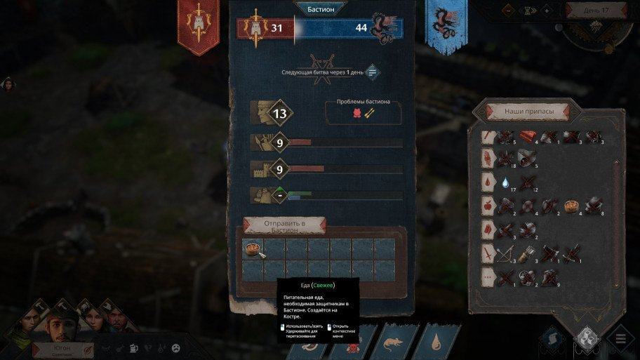
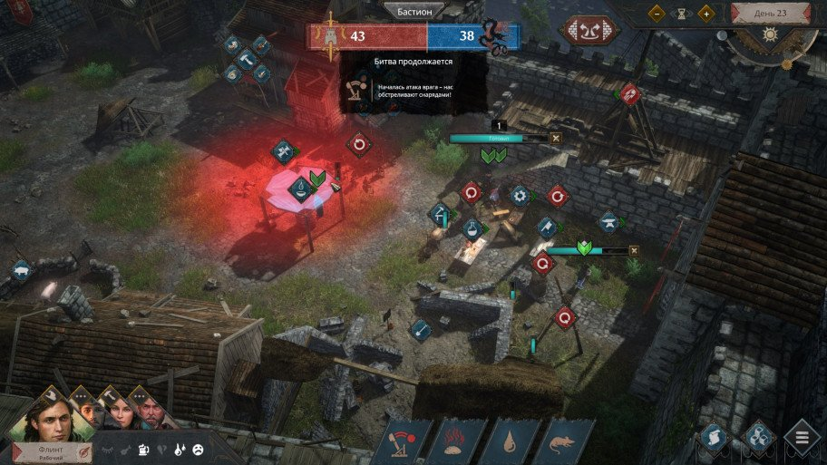
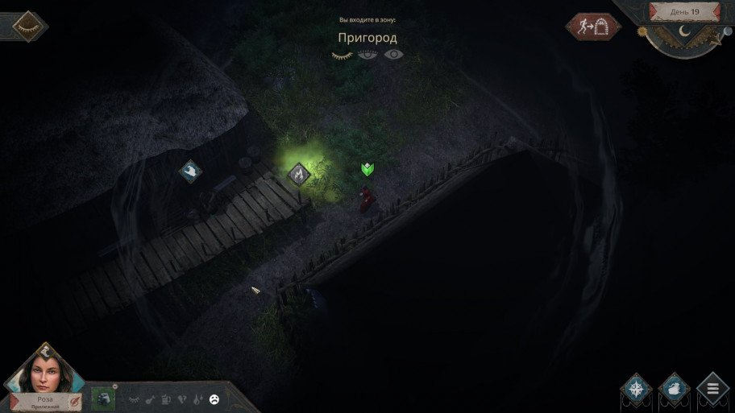

SIEGE SURVIVAL: GLORIA VICTIS
Платформа: PC
Жанр: strategy
Дата выхода: 18 мая 2021 г.
Разработчик: Black Eye Games
Издатель: Black Eye Games
SIEGE SURVIVAL: GLORIA VICTIS: ОБЗОР
Gloria Victis: Medieval MMORPG — независимая разработка польской студии Black Eye Games,
вышедшая в Steam Early Access аж пять лет назад (и до сих пор там пребывающая). Не слышали о такой?
Неудивительно — проект получился довольно нишевый, не снискал особой популярности,
но не стал и провалом, позволив разработчикам попробовать свои силы в другом жанре.
Siege Survival: Gloria Victis — «стратегия-выживач»: тот же самый «викинго-рыцарский» сеттинг,
что и у ММО-тёзки (без дословного копирования исторических реалий — мир здесь выдуманный),
а игровой процесс можно описать фразой «This War of Mine в Средневековье».
Вроде бы понятно, что нас ждёт: менеджмент ресурсов, крафт, вылазки за припасами, сложный моральный выбор»…
Но сумели ли разработчики удивить чем-то ещё?
Горе побеждённым
В королевство Мидланд пришла беда: на прибрежный город Эдринг напали морские налётчики из Каргальда, исмиры. Несмотря на ожесточённое сопротивление, защитники города ничего не смогли им противопоставить — вскоре Эдринг был почти полностью захвачен. Жителей ждала смерть, а их дома — разграбление. Выстоял лишь центральный замок, обороняемый горсткой стражников, — внутри укрылось несколько горожан, успевших отправить гонца с призывом о помощи. Но до подхода союзников ещё надо дожить, что будет нелегко: защитников мало, исмиры готовят новый штурм, а запас пищи и воды в гарнизоне ограничен.

Игроку придётся взять на себя руководство выжившими горожанами (именно мирными жителями, а не солдатами). Необходимо пережить осаду и дождаться помощи, обеспечивая стражников едой, снаряжением и медициной, пока они держат оборону на стенах. В небольшом замковом дворике можно построить склад, развести костёр для приготовления пищи, соорудить печь для обжига кирпичей и выплавки стали и прочее нехитрое хозяйство, но этого мало — без регулярных ночных вылазок за припасами в разрушенный город не обойтись.
День и ночь
Идея стратегий про выживание не нова: с This War of Mine игру начали сравнивать с момента анонса. Есть и совсем свежие примеры — хотя бы Mr. Prepper, о которой я недавно рассказывал. Что интересно, все эти проекты сделаны в Польше — почему-то полякам близка тема выживания.

Игровой процесс Siege Survival: Gloria Victis разделён на два взаимосвязанных этапа — дневной и ночной.
Днём горожане занимаются мирными делами: кормят кур и свиней, готовят еду, собирают полезные приспособления,
вроде верстаков или печей, и копаются в руинах башни — вдруг что-то ценное попадётся.
Мало заботиться о своих подопечных — на плечах игрока лежат заботы и о гарнизоне бастиона,
который отбивает штурм за штурмом. Стражникам требуются еда, питьё и снаряжение,
а для ремонта стен нужны кирпичи и строительный камень. Бастион, как и сражения,
которые он ведёт, — понятия абстрактные: это отдельное окно в интерфейсе,
в котором показаны силы обороны, их основные потребности.
Здесь же можно забирать у стражи сломанное оружие и доспехи и отправлять ей новое снаряжение и пищу.
Не стоит забывать и о персонажах, находящихся непосредственно под нашим управлением.
Их немного — от одного до четырёх, в зависимости от стартовых настроек.
При неполной команде есть возможность можно найти и других,
предложив им руку помощи — происходит это во время ночных вылазок в разграбленный город.
Нужны эти рейды, само собой, не только для пополнения команды (напротив,
иногда сомневаешься — нужен ли ещё один голодный рот в и так бедствующей крепости),
но и в первую очередь для поиска ресурсов, без которых осада очень быстро закончится поражением обороны.

Советую выбрать первый вариант: да, так чуть сложнее, но не так скучно.
Бич подобных игр — рутинный гринд ресурсов, а если он ещё и построен вокруг ожидания,
когда закончится каждое действие (как здесь, например), то вообще туши свет:
наблюдать медленное движение полоски прогресса во время сбора урожая мало кому понравится.
Наличие же нескольких персонажей позволяет этого избежать — пока один занят,
отдаёшь приказания второму, третьему, а там, глядишь, и первый освободится.
Свободных рук в любом случае будет не хватать, так что занятие найдётся для всех.
Плюсы: отсутствие рутинного гринда во время дневной фазы геймплея, неплохой баланс сложности.
Минусы: неудачная попытка рассказать серьёзную историю, скучные вылазки в город.